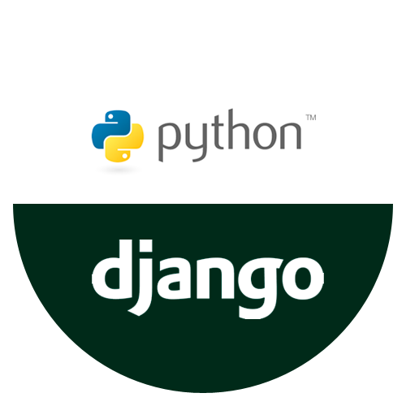

저는 백엔드 개발자가 되기를 희망합니다!
처음에는 대부분의 비전공자가 그렇듯, 저도 생활코딩으로 공부를 시작했습니다.
컴퓨터에 관심이 많아서 어릴때 apk 파일도 분해해보고 인터넷에서 UI개념도 주워듣고 그랬는데,저한테 디자인 관련은 영 아닌거같더라구요.

엘리스에 들어오기 전에 장고를 공부하면서 실제로 사용 가능한 사이트도 하나 만들어보니 너무 재미있었어요.
엘리스 다음 기수 분들에게 도움을 주는 사람이 싶습니다!
엘리스에 지원하기 전에, 엘리스 공고에 나와있는 선배 개발자분들 중 한분과 얘기를 나눠봤는데요,일면식이 없었지만, 엘리스에 관한 질문을 드린다고 하니 정말 친절하게 제 고민을 풀어주셨습니다.
그런 모습을 보고 저도 다음 기수 분들에게 도움을 주고 싶더라구요.
그분께 다시 한번 감사드립니다.